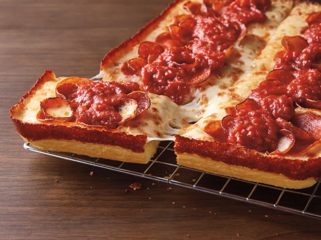

Pizza

Description
This pizza recipe shows how to recreate Pizza Hut's new Detroit-style deep
dish pizza.
Ingredients
- 1 can of tomato sauce
- 1 lb of flour
- 2 cups water
- 2 oz yeast
- 1 cup of mozzarella
- 5 oz pepperoni
- olive oil
Steps
- Mix flour, water, and yeast in a mixing bowl and let rest 30 minutes with plastic wrap on top.
- Once dough is rested, put a pinch of flour on a clean surface and roll dough thin.
- Spray square metal pan with olive oil and place dough in the pan.
- Sprinkle cheese generously on top of dough.
- Pour tomato sauce on top of cheese.
- Place pepperoni generously on top of tomato sauce.
- Preheat oven to 425℃ and place pizza into oven for 40-45 minutes.
- Cut pizza into slices and serve.